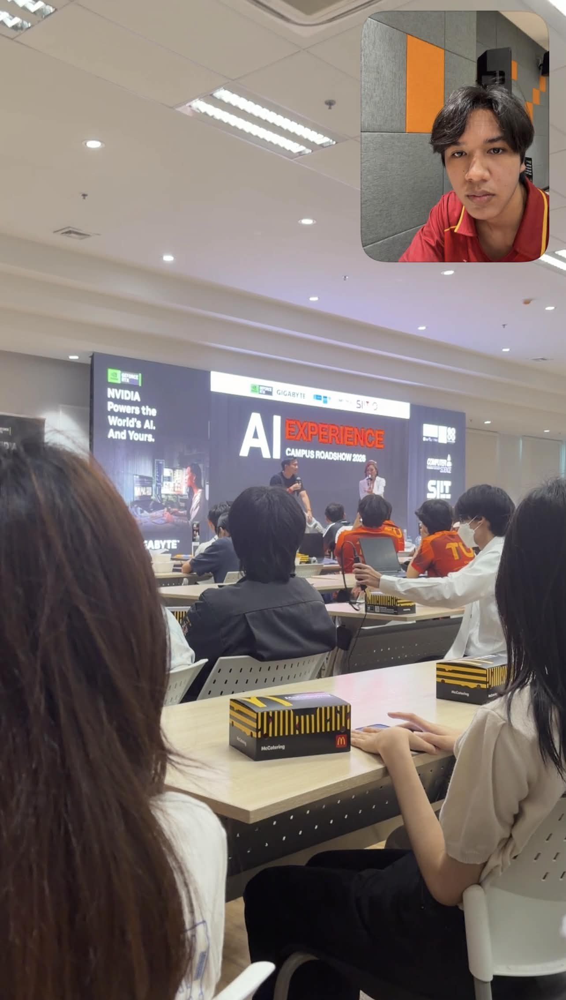

My Portfolio
Portfolio Item:
Title: CS100 A1:My first Learning Portfolio
Type: Course Assignment
Date: 30 Aug 2026
Role: Individual Developer
Description: พัฒนาเว็บไซต์ Learning Portfolio หน้าเดียวด้วย HTML และ CSS
Skills: HTML, CSS, Semantic HTML
Reflection:
- What I did:
Developed a single-page Learning Portfolio website from scratch using HTML and CSS, applying
semantic HTML structures to organize personal information, student details, and coursework
assignments.
- What I learned:
Gained a deeper understanding of HTML and CSS coding fundamentals, structured tagging, and how to
properly build and layout web pages.
- Challenge:
Sometimes struggled to remember all the syntax and occasionally forgot to close command tags
properly, which required reviewing course slides and debugging the code to fix layout issues.
- Next step:
Plan to incorporate more graphic details and advanced CSS decorating techniques to make the website
visually more interesting and engaging in future updates.
Evidence:
Deployed Web
Title: AORUS AI EXPERIENCE CAMPUS ROADSHOW 2026
Type: Activity
Date: 4 Sep 2026
Role: Participant
Description: ได้เรียนรู้เทคโนโลยี AI ในปัจจุบัน การใช้งาน Local AI บนเครื่องตนเอง และแนวทางการนำ
AI ไปประยุกต์ใช้ในชีวิตประจำวัน
Skills: AI Literacy, AI Tools Usage, Digital Literacy
Reflection:
- What I did:
I attended the AORUS AI EXPERIENCE CAMPUS ROADSHOW 2026 at Thammasat University. I learned about AI
technology and explored how AI can be used for coding, document analysis, and creating images and
videos. I also learned about Local AI and how to run AI models on a personal computer.
- What I learned:
I learned about the development of AI, from Machine Learning and LLMs to AI Agents. I also learned
that Local AI can offer more privacy, reduce cloud costs, and work without an internet connection in
some cases. This activity helped me understand how AI can support both studying and working.
- Challenge:
One challenge was understanding the differences between various AI technologies and how they work.
Since I am still a beginner in this field, some technical terms were new to me. However, the
activity helped me gain a better understanding of AI and its practical uses.
- Next step:
I plan to explore AI tools such as Ollama and learn how to use them in practice. I also want to
improve my computer skills and learn basic programming so I can apply AI to my studies and future
projects in Computer Science.
Evidence:
